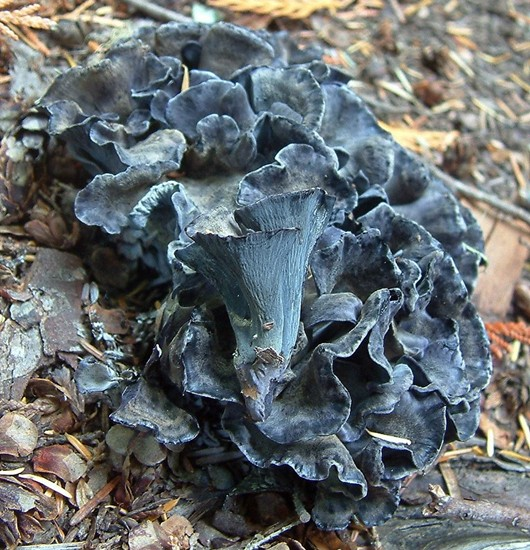
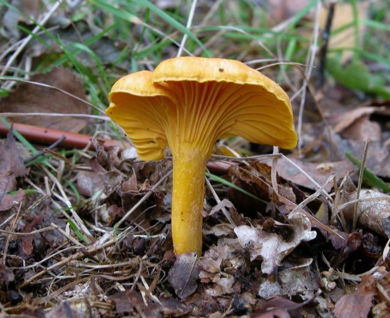
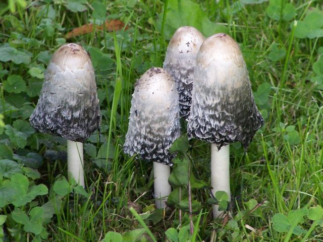

Mushrooms of the Pacific Northwest
Select a mushroom to learn more

Black Morel
Black Morel
The cap up to 8cm wide, hollow inside with characteristic honeycomb surface consisting of black/brown ridges and dark brown pits, darkening with age. Stem is white, smooth, irregular and hollow. Bottom of cap does not hang loose but is joined to the stem. Grows single or numerous on the ground, usually near conifers. Appears in early spring. Mild pleasant taste and odor; cook before eating. Tip: morels are variable shape, size and color (white/gray/yellow/brown/black), but are characterized by their distinctively shaped caps that do not hang loose and their hollowness; all morels are prized edibles. Warning: may be poisonous if consumed with alcohol. Warning: do not confuse with a False morel, which is not hollow inside and has a cap attached at the top of the stalk rather than a continuous hollow chamber.

Black Chanterelle
Black Chanterelle
Also known as the Horn of Plenty or Black Trumpet. The cap is up to 8cm wide, with a hollow tube-like depresson, dark brown or soot-grey/black. In older specimens the cap margins are wavy/split, otherwise they are rolled out. Fruiting body is funnel-shaped with smooth-looking but slightly wrinkled outer surface that is smokey grey with a lilac tint, and extends almost to the base. Stem is very short, hollow, brown. Grows on the ground grouped together under conifer/hardwood stands. Appears in the early summer and fall. Has a mild/pleasant taste and odor; cook before eating. An edible look-alike is Craterellus fallax, which is practically identical but has an orange spore print rather than whitish.

Blue Chanterelle
- 
Blue Chanterelle
The caps are up to 10cm wide, flat, smooth, dark purple to blue/black with incurved edges. Fruiting body is funnel-shaped. Outside of the mushroom is pale violet with small ridges running down almost to the base. Flesh is thick, soft, blue to black. Stems are fused together. Appears in sumer and fall. Grows in large, dense clusters under conifers such as spruce and fir. Taste is mild and pleasant, with an indistinct odor; cook before eating.

Cauliflower Mushroom
Cauliflower Mushroom
The fruiting body is up to 30cm wide, white or yellow/brown tinted, shaped like a cauliflower head with a spongy, curly rosette exterior. Has no visible stem, gills, tubes, pores or spines. Flesh is white, firm, with many branches arising from a hidden central stalk. Appears in the late summer and fall. Grows singly or in small groups on the ground at or near the base of conifers. Has a mild, pleasant taste and indistinct odor; cook thoroughly before eating, younger specimens are preferred. An edible look-alike is Sparassis spathulata, which is similar in appearance but has multiple anchor points to the ground.
- 
Chanterelle
Golden Chanterelle
The cap is up to 15cm wide, depressed in the center, smooth, dry, uniform egg-yolk yellow. Mature specimen is funnel shaped, immature specimens should be avoided. Forking ridges (rib-like folds) are present rather than gills; they descend onto the stem. Flesh is firm, yellowish, does does not change color when bruised. Stem is solid, orange tinted, tapering slightly to the base. Grows solitary or in groups on the ground, but not clustered at base of trees, and never on wood. Appears in the summer and fall. Has a pleasant, mild taste and mild, fruity odor; cook before eating. An edible look-alike is the Smooth chanterelle (Cantharallus lateritis), which is similar in appearance but grows under oaks, has a pinkish hue and reduced ridges. Warning: do not confuse with the poisonous False Chantarelle (Hygrophoropsis aurantiaca), has gills rather than ridges, often grown on decaying wood, tastes foul and causes stomach upset. Warning: do not confuse with the poisonous Jack-O'Lantern Fungus (Omphalotus illudens), which grows in large clusters on roots, stumps, or at the base of trees and has an unpleasantly sweet odor.

Chicken of the Woods
Chicken of the Woods
The fruiting bodies are up to 20cm wide, shelf-like, rubbery, sulphur yellow to orange, sometimes with bright orange tips. Older specimens become pale and brittle, chalk-like. Flesh is white to yellow tinted, firm, softer towards the edges. Underside is characteristically white to bright yellow, with tiny pores instead of gills. Has no stem. Grows in overlapping groups on logs, stumps, or wounds of trees. Appears in spring, summer, and fall. Has a mild taste and odor; cook before eating. Tip: harvest the soft outer margin of the younger specimens to avoid bitterness. An inedible (but not poisonous) look-alike is Pycnoporus cinnabarinus, which is corky/rigid rather than rubbery, and orange/red on the top and underside, rather than bright yellow on the underside. an inedible (but not poisonous) look-alike is Hapalopilus nidulans, which is cinnamon brown/orange on the top and the underside, rather than b right yellow on the underside. Warning: can cause allergic reaction in some people due to toxins absorbed from the tree; begin by sampling small amounts.

Common Puffball

Common Puffball
The fruiting body is up to 6cm wide, pear-shaped, white to dull white, with small conical spines that break off but leave a network of spots behind. Flesh must be firm and all-white. Flesh must be undifferentiated with no trace of gills, no thick rind and no outline of mushroom visible in cross section. appears in the summer and fall. Has a mild taste with no odor; cook before eating. A non-poisonous look-alike is Lycoperdon foetidum, which is similar in appearance but are brown/greyish-beige rather than white and has an unpleasant odor. Grows singly, in groups or clumped together on forest beds under conifers and hardwoods. A look-alike with unknown edibility is Lycoperdon umbrinum, which is similar in appearance but are brown/tan rather than white. Warning: do not confuse with young specimens of the deadly Destroying Angel or other poisonous white mushrooms, which have no spines and have faint differentiation inside rather than being solid white.

Hedgehog Mushroom
Hedgehog Mushroom
The cap is up to 10cm wide, convex, smooth, dry, wavy at the edges, light brown with an orange tint. Underside has distinctive spines that are cream-colored. Flesh is white when cut, coloring unevenly to yellow-brown. Stem is solid, white, possibly enlarging slightly towards the base. Grows solitary or numerous on the ground in areas with conifers and hardwoods. Appears in the summer and fall. Has a pleasant taste with no odor; cook before eating. An edible look-alike is Hydnum umbilicatum, which is similar in appearance but smaller and with a darker cap, growing in bogs and swamps. An inedible (but not poisonous) look-alike is Bankera fuligineo-alba, which is similar in appearance but instead of a smooth cap has one with embedded pine needles and organic debris.

King Bolete
King Bolete
Cap is up to 35cm wide, convex, reddish to yellowish brown, smooth but often uneven. Underside of cap consists of pores, off-white to olive in age, with no pink tinge. Flesh is white; flesh and pores unchanging when bruised. Stem is white or tinted yellow/brown with a characteristic fine, white network extending down from the top of the stem, variable in shape. Partial veil absent. Grows singly or as many in conifer and hardwood stands. Appears in spring, summer and fall. Has a mild and pleasant taste with no odor; cook before eating. Tip: boletes are mushrooms that grow on the ground and have a sponge-like surface on the underside of the cap - tiny pores, rather than gills. There are no deadly-poisonous boletes, though some varieties can cause nausea/vomiting. An unknown bolete is safe if it does not bruise blue after being cut, is not red on the underside of the cap, and does not taste foul. Small amounts should be consumed when testing an unfamiliar bolete.

Oyster Mushroom
Oyster Mushroom
The cap up to 8cm wide, fanlike convex shape, smooth, moist, cream to light brown. Flesh is off-white, firm. Stem usually not present, otherwise white, dry, with white hairs at base. Usually grows in large overlapping custers, on trees, logs and stumps of hardwoods and conifers, never on the ground. Appears in spring and fall. Has a mild, pleasant taste and fragrant fruity odor; cook before eating. Tip: the oyster mushroom has several look-alikes that are indistinguishable in the field, all are edible as long as they grow on trees (avoid those growing on dead wood/logs/stumps). A potentially poisonous look-alike is the Angel wings mushroom (Pleurocybella porrigens), which is similar in appearance but is white rather than cream, has thinner flesh, no odor, and grows on dead wood (logs/stumps) rather than trees.
- 
Shaggy Mane
Shaggymane Mushroom
Cap is up to 15cm wide, narrow, cylidrical, white, and covered in thin, shaggy red/brown scales. Older specimens have a cap that is bell-shaped. Flesh is white, soft. Gills are narrowly attached to the stem and white/grey when young. The flesh and gills of older specimens liquefies into a black inky mass. Partial veil leaves an inferior, possibly moveable ring on the white stem. Shaggy manes grows scattered or grouped together in grassy areas covering decomposing wood. They appear in the early spring and late fall. Has a pleasant taste with no odor; cook before eating. An edible look-alike is Coprinus sterquilinus, which similar in appearance but smaller, with fewer scales and growing on dung. Tip: collect younger specimens and/or remove blackening areas which have a more bitter taste. Tip: cooking with water shortly after collecting helps to prevent the dish from turning into a black inky mess.